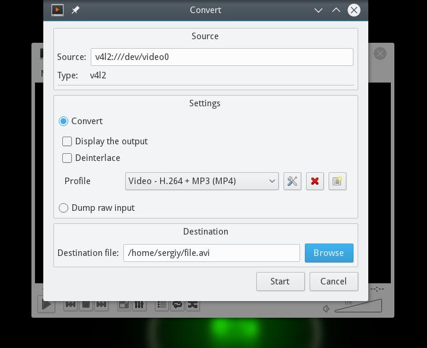

Главная
Настройка веб-камеры Linux
Настройка веб-камеры Linux
Инструкции Обновлено: 21 сентября, 2020 14 admin
Сейчас все ноутбуки поставляются со встроенным средством связи - веб-камерой. Это очень удобно. С помощью web-камеры Linux вы можете общаться с друзьями через интернет, делать фото или даже записывать видео с ноутбука. Но только есть одно но.
Не для всех моделей веб-камер есть драйвера в ядре Linux. Веб-камеры подобно сетевым wifi адаптерам еще не полностью поддерживаются этой операционной системой. Но тем не менее многие работают и даже очень хорошо. В этой инструкции мы рассмотрим как выбрать веб-камеру для Linux, а также поговорим о том как с ней работать и настраивать.
Одно дело если ваша веб-камера встроена в ноутбук и вы ничего уже не можете поменять, но другое, если вы покупаете ее сами. В таком случае к выбору web-камеры linux нужно подойти серьезно. Несмотря на то, что сейчас все больше и больше оборудования поддерживается ядром Linux, и достаточно хорошо поддерживаются многие камеры, важно обезопасить себя от проблем.
В Linux, для подключения веб-камер чаще всего используется драйвер v4l, он по умолчанию включен в ядро. Если ваша веб камера linux будет совместима с этим драйвером, скорее всего, с ней проблем не будет. Посмотреть список совместимых устройств можно на сайте Ubuntu. Если кратко, то - вот основные производители:
Конечно, есть и другие производители, и другие драйвера, но с этим драйвером есть большая вероятность того что все будет работать из коробки. v4l использует другие драйвера для работы с оборудованием от различных производителей, но драйвера для всех веб камер, поддерживаемых v4l уже встроены в ядро.
Если веб камера linux совместима с вашей системой, то она автоматически определится и будет работать. Давайте посмотрим определилась ли веб-камера в вашей системе:
sudo ls -l /dev/ | grep video
crw-rw----+ 1 root video 81, 0 май 31 04:14 video0
Устройство video0 и есть ваша webcam linux, если все в порядке, вы можете с ней работать. Но что же делать если камеры нет? Не все камеры поддерживаются по умолчанию ядром и драйвером v4l. Но для некоторых есть сторонние драйвера, так что еще есть шанс заставить все это работать. Сначала посмотрим что скажет система о состоянии драйверов нашей веб камеры:
hwinfo --usb
Module Alias: "usb:v046Dp08DAd0100dc00dsc00dp00ic01isc02ip00"
Driver Info #0:
Driver Status: gspca_zc3xx is active
Driver Activation Cmd: "modprobe gspca_zc3xx"
Config Status: cfg=new, avail=yes, need=no, active=unknown
Attached to: #8 (Hub)
В этом примере программа сообщает что нужно использовать драйвер gspca_zc3xx, он готов к использованию и осталось его только загрузить командой:
modprobe gspca_zc3xx
Теперь еще раз проверьте есть ли устройство видео в каталоге /dev/.
Обычно система в этом сообщении должна сказать какой драйвер нужен, а уже с помощью интернета вы сможете найти как его установить в своей системе. Если предыдущий драйвер не работает или у вас другая веб-камера можно попробовать также драйвер uvcvideo:
sudo modprobe uvcvideo
Не во всех дистрибутивы по умолчанию выставляются правильные права на доступ к файлу устройства веб-камеры. Добавим разрешение на чтение и запись для всех пользователей в группе video:
sudo chown root:video /dev/video0
Настройка веб-камеры linux завершена. Теперь давайте рассмотрим как использовать веб-камеру в Linux.
Кроме стандартного использования web-камеры linux по назначению для видеозвонков в программе Skype, можно делать еще много вещей, например писать видео или делать фотографии. В Linux существует несколько способов записи видео с помощью веб-камеры.
Рассмотрим самые распространенные из них. Во-первых, вы можете транслировать вывод веб камеры сразу на экран компьютера или ноутбука просто выполнив команду:
mplayer tv:// -tv driver=v4l2:width=640:height=480:device=/dev/video0 -fps 30
А с помощью mencoder вы можете сразу писать вывод веб-камеры в avi файл:
mencoder tv:// -tv driver=v4l2:width=320:height=240:device=/dev/video0 -ovc lavc -o webcam.avi
Если в вашей системе не установлены эти утилиты, то вы можете использовать даже ffmpeg для записи видео с веб камеры:
ffmpeg -f video4linux2 -s 320x240 -i /dev/video0 out.mpg
Вам необязательно использовать для этой задачи консольные утилиты. Записывать видео с различных устройств позволяет и такая программа, как vlc. Запустите программу из главного меню, откройте меню файл, устройство захвата:
Выберите устройство для записи видеокамера, файл устройства video0:
Дальше нажмите на стрелочку около кнопки Play и выберите Convert (конвертировать) такое решение необходимо для сохранения данных в файл, если сохранять ничего не нужно, можно сразу нажать Play, чтобы проигрывать видео на экране в реальном времени:
Здесь осталось только выбрать файл для сохранения в поле конвертировать в файл:

После того как вы нажмете Старт начнется запись и засветится лампочка на веб-камере:
В набор программ v4l-tools входит утилита streamer, которая позволяет выполнять различные действия веб-камерой в Linux, записывать фото и видео.
Возможно, перед началом работы придется установить сам пакет:
sudo apt-get install v4l-tools
Теперь можно использовать программу. Для записи одного фрейма выполните:
streamer -o foobar.ppm
Следующая команда сохранит 10 фреймов:
streamer -t 10 -r 2 -o foobar00.jpeg
А такой командой можно записать видео, длительностью 30 секунд и с расширением 352 х 240 пикселей:
streamer -t 0:30 -s 352x240 -r 24 -o movie.avi -f mjpeg -F stereo
Вот и все. В этой статье была кратко рассмотрена настройка веб-камеры Linux. Если у вас остались вопросы, пишите комментарии!
Похожие записи: